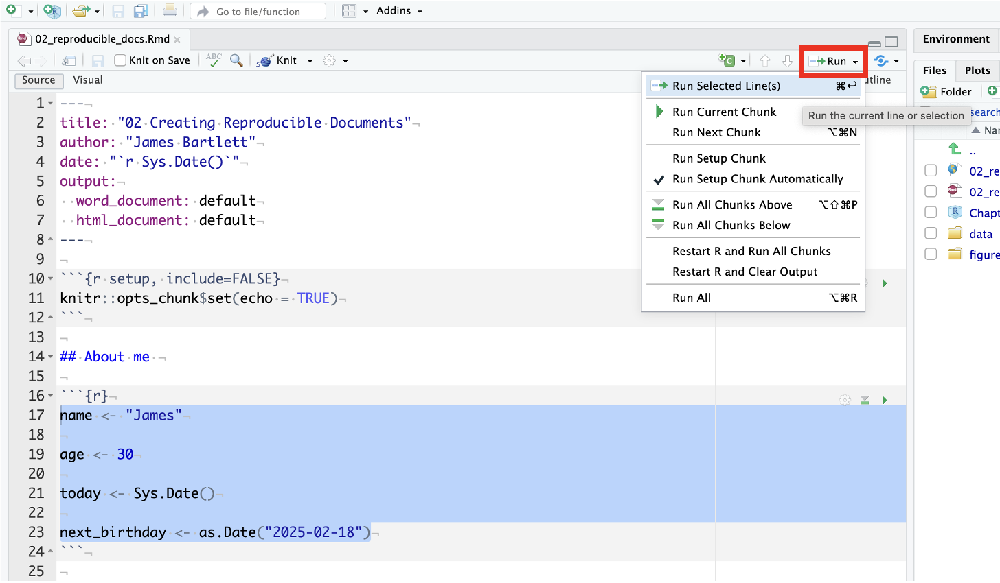

Whatever you do, don’t call the folder your keep your data skills work in “R”. If you do this, sometimes R has an identity crisis and won’t save or load your files properly. It can also really damage your setup of R and lead you to having to reinstall everthing. The reason being is that, remembering packages from the first chapter, R tends to save all the packages in a folder called R. If there is another folder called R then it gets confused and stops working properly. You can of course have a folder called “my_Rwork” but just not “R” by itself.
2 Intro to R
In this chapter we are going to start introducing you to using code to create reproducible research. We will cover things such as setting a working directory, what is a working directory, using R Markdown, and writing code in R Markdown. There are eight activities in total for this chapter, but don’t worry, they are broken down into very small steps to help you follow along.
2.1 Using your Working Directory
Before you starting to work with data in R, and before you can save the output of what you’ve created (which you almost always will want to do), you first need to tell R where the working directoryThe filepath where R is currently loading files from and saving files to. is. What this means is that we tell R where the files we are going to use (such as our raw data) are located, and where we want to save any files you have created. Think of it just like when you have different course modules, and you have separate folders for each topic e.g. biology, history and so on. When working with data, it’s useful to have all the data sets and files you need nicely organised in folders.
We would highly recommend making a new folder for this course, maybe called “PsychResearchMethods”, “ResearchMethodsLabs”, or “FundamentalsOfQuantAnalysis” and then add sub-folders, inside that folder as you carry out each chapter, saving any data, scripts, and portfolio files for each chapter into these folders. The main thing is that you call the folder something sensible so that you know what it is and where it is. However, see the red warning box below!
Top tip 1: If you’re using R on your laptop rather than the server, it can also be a good idea to save your work onto a cloud storage server like OneDrive so that you never lose your work. Particularly if the work relates to assignments. Just like your written work, you wouldn’t want to lose your coding work!
Top tip 2: Coding is every so slightly easier when file names and folder names do not have spaces in them. We would suggest folder names like “PsychResearchMethods” instead of “Psych Research Methods”.
2.1.1 Activity 1: Create your a folder for all your work
- Choose a location for the work and assignments you will do for this module and then create a folder and the necessary sub-folders for each chapter. These will be blank for now but we will add to them over the semester.
2.1.2 Activity 1b: Upload data files to the server
Note: This activity (activity 1b) is only for those using the University of Glasgow R Server - if you are using a local installation on your own device you will not need to do this activity and skip down to Activity 2.
The main disadvantage to using the R server is that you will need create folders on the server and then upload and download any files you are working on to and from the server. Please be aware that there is no link between your computer and the R server. If you change files on the server, they won’t appear on your computer until you download them from the server, and you need to be very careful when you submit your assessment files that you’re submitting the right file. This is the main reason we recommend installing R on your computer if you can.
Going forward throughout this book, if you’re using the server, you’ll do an extra step where you also upload them to the sever. We’re not going to use any data files in this session but let’s try an example to make it clear how you get the data files on to the server.
- Log on to the R server using the link on the main course Moodle page.
- In the file pane click
New folderand create the same structure you created on your computer. - Download
ahi-cesd.csvandparticipant-info.csvinto the chapter folder on your computer. To download a file from this book, right click the link and select “save link as”. Make sure that both files are saved as “.csv”. Do not open them on your machine as often other software like Excel can change setting and ruin the files. - Now that the files are stored on your computer, go to RStudio on the server and click
UploadthenBrowseand choose the folder for the chapter you’re working on. - Click
Choose fileand go and find the data you want to upload.
2.1.3 Activity 2: Set the working directory
Ok great, now that we have a folder structure that will keep everything nice and ordered you need to set the working directory by clicking on the top menu, Session >> Set Working Directory >> Choose Directory and then select the relevant folder for this chapter as your working directory.
Note: Setting the working directory means that you are telling R where the data is that you want to work on. It is also where you are going to save files and output. More often than not, when learning, the most common error is because people have not set the working directory and R does not know where the data is!
Top tip: One of the first things we always do when we open R in RStudio is set the working directory to where our data is.

2.2 R Markdown for data skills and portfolio assignments
Ok great, we now have a folder structure we are going to use and we have told R where it is so now let’s write some code!
For the duration of this data skills book and the related assignments you will use a worksheet format called R Markdown (abbreviated as Rmd) which is a great way to create dynamic documents with embedded chunks of code. Remember you saw scripts in Chapter 1? Well R Markdown is like a script but has some excellent features that make it so much better.
R Markdown documents are self-contained and fully reproducible (if you have the necessary data, you should be able to run someone else’s analyses with the click of a button) which makes it very easy to share. This is an important part of your open science training as one of the reasons we teach data skills this way is that it enables us to share open and reproducible information. Using these worksheets enables you to keep a record of all the code you write during this course, and when it comes time for the portfolio assignments, we can give you a task you can and then fill in the required code.
For more information about R Markdown feel free to have a look at their main webpage sometime http://rmarkdown.rstudio.com but for now, the key advantage to know about is that it allows you to write code into a document, along with regular text, and then knit it using the package knitr to create your document as either a webpage (HTML), a PDF, or Word document (.docx). This will become more clear with an example!
2.2.1 Activity 3: Open and save a new R Markdown document
- Open a new R Markdown document by clicking the ‘new item’ icon and then click ‘R Markdown’ as shown here:

- You will now be prompted to give it a title so let’s call it “Intro to R”.
- Also, change the author name to your GUID as this will be good practice for the portfolio assignments. * Leave the output format selected as HTML for now!
Once you click OK this will open a new R Markdown document.
- Save this R Markdown document, by clicking
File >> Save asfrom the top menu, and name this file “Intro to R” as well.
If you’ve set the working directory correctly, you should now see this file appear in your file viewer pane in the bottom right hand corner like in the example below (your file names and folders will be different depending on what you called the folders and file).

2.2.2 Activity 4: Create a new code chunk
Great. We now have our R Markdown document so let’s start using it to see how we can combine code and text to create an informative document.
When you first open a new R Markdown document you will see a bunch of default text that looks like this:

The default text is just there to give you some examples of what you can do with R Markdown but we are going to show you that as well so do the following:
- Delete everything below line 7
- On line 8 type “About me”
- Click on the Top Menu:
Code >> Insert Chunkfrom the top menu.
Your Markdown document should now look something like this:

What you have created is called a code chunk. In R Markdown, anything written outside of a code chunk is assumed to be just normal text, just like you would have in a text editor, and anything written inside the code chunk is assumed to be code. This makes it easy to combine both text and code in one document.
When you create a new code chunk you should notice that the grey box starts and ends with three back ticks, followed by the {r}, and then it ends with three back ticks again. This is the structure that creates a code chunk. You could actually just type this structure instead of using the Insert approach but when learning it does help a bit!
One common mistake is to accidentally delete these back ticks. A useful thing to notice is that code chunks tend to have a different color background - in the default viewing settings a code chunk is grey and the normal text is white. You can use this to look for mistakes. If the colour of certain parts of your Markdown doesn’t look right, check that you haven’t deleted the backticks.
In addition, remember it is backticks (i.e. this `) and not single quotes (i.e. not this ’)!
2.2.3 Activity 5: Write some code
Awesome! You are doing great and learning more than you think you are!
Now we’re going to use the code examples you read about in Programming Basics to add some code to our R Markdown document.
- In your code chunk write the below code but replace the values of name/age/birthday with your own details). Remember that the four lines of code should all be inside the code chunk!
Note: Text and dates need to be contained in quotation marks, e.g. “my name”. Numerical values are written without quotation marks, e.g. 45.
Top tip: Missing and/or unnecessary quotation marks are a common cause of code not working - remember this!
2.3 Running code in R Markdown
Brilliant! We now have code in our code chunk and now we are going to run the code! Running the code just trying to make it work, or seeing if it works! When you’re working in an R Markdown document, there are several ways to run your lines of code.
- First, one slow option is you can highlight the code you want to run and then click
Run >> Run Selected Line(s).

- Alternatively, you can press the green “play” button at the top-right of the code chunk and this will run all lines of code in that chunk.

Even better though is to learn some of the keyboard shortcuts below so it becomes more natural and fluid in your typing and makes your learning easier!
- To run a single line of code, make sure that the cursor is in the line of code you want to run and press
ctrl + enter. - If you want to run all of the code in the code chunk, press
ctrl + shift + enter. Note: When using this last method of running lines of code - by positioning the cursor on the line and usingctrl + enteron your keyboard, note that the cursor does not have to be at any specific point of the line, i.e. it does not have to be at the start, middle or the end, it can literally be anywhere.
2.3.1 Activity 6: Run your code
- Now run your code using one of the methods above. You should see the variables
name,age,today, andnext_birthdayappear in the environment pane in the top right corner. - Clear out the environment using the broom handle approach we saw in Chapter 1 and try a different method to see which works best for you!
2.3.2 Activity 7: Inline code
Superb! Our code works and we know how to run it. But one of the incredible benefits we said about R Markdown is that you can mix text and code. Even better is that you can combined code into a sentence to put specific outputs of your code, like a value, using what is called inline code. Think about a time you’ve had to copy and paste a value or text from one file in to another and you’ll know how easy it can be to make mistakes. Inline code avoids this. It’s easier to show you what inline code does rather than to explain it so let’s have a go.
First, copy and paste this text exactly (do not change anything) to the underneath and outside your code chunk - this will be the white section under the grey code chunk if you are using default views.
Ok so nothing happened there but that is because we have not done the last magic step - in the next activity!
2.3.3 Activity 8: Knitting your file
As our final step we are going to knit our file. This means that we’re going to compile (i.e. turn) our code into a document that is more presentable. * From the top menu, click Knit >> Knit to HMTL. R Markdown will now create a new HTML document and it will automatically save this file in your working directory.
Now let’s look at this outputted HTML document and at the sentence we copied in from Activity 7. As if by magic, that slightly odd bit of text you copied and pasted now appears as a normal sentence with the values pulled in from the objects you created.
My name is Emily and I am 35 years old.
It is -1062 days until my birthday.
Pretty amazing isn’t it! We’re not going to use inline coding very often in the rest of the course but hopefully you can see just how useful this would be when writing up a report with lots of numbers! R Markdown is an incredibly powerful and flexible format - this book was written using it! The key thing about using inline coding is the structure, i.e. the backtick, followed by the lower case r, then space, then the code, then another backtick. You will get the hang of it as the semester goes on with a little practice.
There are a few final things to note about knitting that will be useful for going forward with your data skills learning and assignments:
- R Markdown will only knit if your code works - this is a good way of checking for assignments whether you’ve written functioning code!
- You can choose to knit to a Word document rather than HTML. This can be useful for e.g., sharing with others, however, it may lose some functionality and it probably won’t look as good so we’d recommend always knitting to HTML.
- You can choose to knit to PDF, however, unless you’re using the server this requires a LaTex installation and is quite complicated. If you don’t already know what LaTex is and how to use it, do not knit to PDF. If you do know how to use LaTex, you don’t need us to give you instructions!
- R will automatically open the knitted HTML file in the viewer, however, you can also navigate to the folder it is stored in and open the HTML file in your web browser (e.g., Chrome or Firefox).
2.4 Finished
And you’re done! On your very first time using R you’ve not only written functioning code but you’ve written a reproducible output! You could send someone else your R Markdown document and they would be able to produce exactly the same HTML document as you, just by pressing knit.
The key thing we want you to take away from this chapter is that the data skills that you are going to learn can be broken down into manageable chunks and that is how we are going to teach you to help you learn them. The skills might be very new to a lot of you, but we’re going to take you through it step-by-step. You’ll be amazed at how quickly you can start producing professional-looking data visualisations and analysis.
If you have any questions about anything contained in this chapter or in Programming Basics, please remember to ask us!
2.5 Test Yourself
- One of the key first steps when we open RStudio is to:
One of the most common issues we see is that code doesn’t work first time because people have forgotten to set the working directory. The working directory is the file you want to save any files to, or any output, or contains your data. Code needs to know where the data is so we set the working directory as the first step when we open RStudio
When using the default environment color settings for RStudio what color would the background of a code chunk be in R Markdown?
When using the default environment color settings for RStudio what color would the background of normal text be in R Markdown?
Assuming you haven’t changed any of the settings in RStudio, code chunks will tend to have a grey background and normal text will tend to have a white background. This is a good way to check that you have closed and opened code chunks correctly.
- Code chunks are started with:
Code chunks always take the same general format of three backticks followed by curly parentheses and a lower case r inside the parentheses. Often people mistake these backticks for single quotes but that won’t work. If you have set your code chunk correctly, using backticks, the background color will change!
- Inline coding is:
Inline coding is an incredibly useful approach for merging text and code in a sentence outside of a code chunk. It can be really useful for when you want to add values from your code directly into your text. Copying and pasting can create errors easily so better to code it when you can!
2.6 Words from this Chapter
Below you will find a list of words that were used in this chapter that might be new to you in case it helps to have somewhere to refer back to what they mean. The links in this table take you to the entry for the words in the PsyTeachR Glossary. Note that the Glossary is written by numerous members of the team and as such may use slightly different terminology from that shown in the chapter.
| term | definition |
|---|---|
| chunk | |
| HTML | |
| knit | |
| R markdown | |
| reproducible research | |
| working directory | The filepath where R is currently loading files from and saving files to. |
End of Chapter
That is end of this chapter. Be sure to look again at anything you were unsure about and make some notes to help develop your own knowledge and skills. It would be good to write yourself some questions about what you are unsure of and see if you can answer them later or speak to someone about them. Good work today!